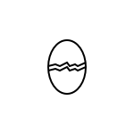

About me
My expertise lies on English, Design, Python, Investment and Philosohopy. These five areas cover my talent of memory, logic thinking, sense of beauty, maths, knowledge of value and feeling. I will try my best to make a deeper understanding towards these 5 areas.